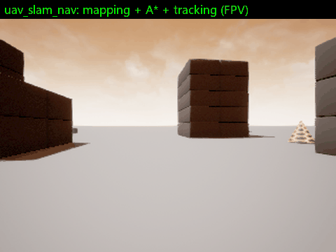
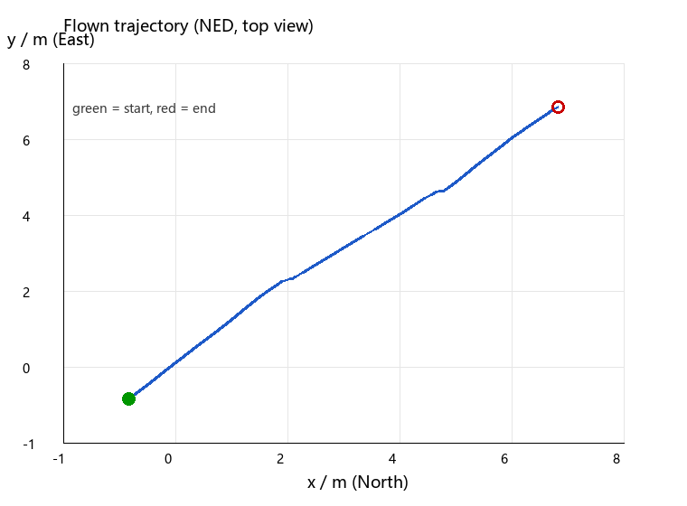

AirSim 无人机建图与自主导航
本示例对应课程任务（3）：在虚拟环境中实现对机器人的建图和导航，导航与 SLAM 的同步仿真。
无人机在 AirSim 场景中用前视深度相机边飞边构建二维占据栅格地图（SLAM 的建图部分），
在得到的地图上用 A* 规划路径，再由纯追踪控制器跟踪路径飞行——建图与导航共用同一份
/map，二者同步进行：地图每更新一次，规划器就用新地图重新检查可达性。
全部代码位于 src/uav_depth_mapping_nav/，是一个标准的 ROS2 Humble ament_python 包，
colcon build 后可用一条 ros2 launch 启动，程序入口为 main.py。
1. 功能概述
系统由 4 个相互独立的 ROS2 节点组成，通过标准话题串联，任意一个节点都可以单独启动调试。
| 节点 | 作用 | 订阅 | 发布 / 服务 | 频率 |
|---|---|---|---|---|
airsim_source |
AirSim 与 ROS2 的桥接 | /uav/cmd_vel |
/uav/pose、/uav/image、/uav/depth；服务 /uav/takeoff、/uav/land |
publish_rate = 10 Hz |
mapping |
深度反投影 + 占据栅格建图 | /uav/depth、/uav/pose |
/map（nav_msgs/OccupancyGrid）、tf map → odom → airsim_ned |
积分 5 Hz，发布 2 Hz |
planner |
A* 路径规划 | /map、/goal_pose、/uav/pose |
/plan（nav_msgs/Path） |
目标变化时触发 |
controller |
纯追踪轨迹跟踪 | /plan、/uav/pose |
/uav/cmd_vel、/nav_status |
20 Hz |
数据流：
/uav/pose ─────────────┬───────────────┐
│ │
┌──────────────┐ /uav/depth ┌────────▼─────┐ │
│ airsim_source│─────────────▶│ mapping │──/map──▶│
└──────┬───────┘ └──────────────┘ │
▲ ▼
│ /uav/cmd_vel ┌──────────────┐
│ │ planner │
│ └──────┬───────┘
│ │ /plan
│ ┌──────────────┐ │
└──────────────│ controller │◀───────────────┘
└──────────────┘
坐标系约定：
/uav/pose直接使用 AirSim 的 NED 系（x 指北、y 指东、z 指向下），frame_id = airsim_ned； 代码里凡是要"离地高度"的地方都写成height = -z。- 地图与路径使用
map系，其 x/y 与 NED 的 x/y 重合，原点为节点启动时无人机所在位置。 map → odom → airsim_ned三个坐标系在本模块中重合（都是单位变换），发布它们只是为了 让 rviz 能正常显示、并给后续接入真实里程计的版本留出接口。
2. 环境与依赖
| 项目 | 版本 / 说明 |
|---|---|
| 操作系统 | Ubuntu 22.04（VirtualBox 虚拟机） |
| ROS | ROS2 Humble |
| 仿真器 | AirSim 1.8.1，Unreal Blocks 场景，运行在 Windows 宿主机 |
| Python 包 | numpy、airsim（pip3 install airsim numpy） |
| 可视化 | rviz2 |
虚拟机通过 VirtualBox 的 NAT 网卡访问宿主机，AirSim 的 RPC 端口映射在 10.0.2.2:41451。
airsim_ip / airsim_port 都是 ROS 参数，换网络环境时只改参数、不改代码。
安装依赖：
sudo apt install ros-humble-tf2-ros ros-humble-nav-msgs ros-humble-sensor-msgs
pip3 install airsim numpy
3. 原理与公式
3.1 针孔相机反投影
深度图的每个像素 $(u, v)$ 携带沿光轴的深度 $Z$（单位米，AirSim 的 DepthPerspective
返回的就是米，不是归一化的 0–255）。由针孔模型，相机系下的三维点为
内参由水平视场角和图像尺寸给出（方形像素，故 $f_y = f_x$）：
代码实现见 grid_utils.py:77 的 camera_intrinsics() 与 grid_utils.py:88 的
backproject()；实际建图时为了提速改用向量化写法（mapping.py:199–mapping.py:201）。
3.2 相机系 → 机体系
AirSim 前视相机的光轴指向机体 $+x$（机头方向），相机自身的坐标约定是 $x$ 向右、$y$ 向下、$z$ 向前。于是两个坐标系之间只差一次轴置换：
其中 $o$ 是相机相对机体重心的安装偏移（参数 camera_offset_x/y/z，
默认全 0，对应 mapping.py:205 的 self._offset）。
3.3 机体系 → 世界系
位姿的四元数 $(x, y, z, w)$ 先按模长归一化，再转成旋转矩阵：
于是世界系坐标
$t$ 为 /uav/pose 中的位置。见 grid_utils.py:16 与 mapping.py:208。
3.4 占据栅格的 log-odds 更新
每个栅格维护一个对数几率 $l$，占据概率 $p = 1 - \dfrac{1}{1 + e^{l}}$。 一条深度射线穿过某格记为"观测到自由"，终点所在格记为"观测到占据"，分别累加
一次观测的贡献就是 $\log\frac{p_{\text{occ}}}{1-p_{\text{occ}}}$（默认 $p_{\text{occ}}=0.85$，
即 $+1.73$）或 $\log\frac{p_{\text{free}}}{1-p_{\text{free}}}$（默认 $p_{\text{free}}=0.40$，
即 $-0.41$）。用对数几率的好处是多次观测可以直接相加、数值不会饱和到 0 或 1；
裁剪到 $[-5, 5]$ 是为了防止早期误差被永久锁死（见 mapping.py:247–mapping.py:254）。
同一帧内可能有大量射线打到同一个格子，因此累加用 np.add.at 完成——它对于重复下标
是"累加"而不是"覆盖"，这正是 mapping.py:249 与 mapping.py:251 的写法。
射线途经的格子由 Bresenham 直线算法给出（grid_utils.py:102），射线上除最后一个格子
以外的都标为自由，最后一个标为占据（mapping.py:236–mapping.py:242）。
世界坐标到栅格下标的换算必须用 floor 而不是 int() 截断：
因为 int(-0.4) == 0 而 floor(-0.4) == -1，用 int() 会让 x、y 为负的区域整体偏移半格，
建出来的地图在原点另一侧会产生错位。这一处修正见 grid_utils.py:57。
3.5 A* 规划
在 8 邻域栅格图上最小化
直移代价为 1，对角代价为 $\sqrt{2}$（planner.py:198）。为保证路径可被真实飞行器跟踪，
做了两处工程处理：
- 障碍膨胀：把占据栅格按
inflation_radius做一次形态学膨胀（planner.py:106）， 规划出的路径与障碍保持安全距离； - 对角穿角检查：走对角 $(dx, dy)$ 时，要求 $(x+dx, y)$ 与 $(x, y+dy)$ 两个直角邻居
都不是障碍（
planner.py:227–planner.py:232），否则路径会"擦着墙角"穿过去， 在膨胀半径小于栅格对角线时尤其明显。
未知栅格的处理由 allow_unknown 控制：默认当作可通行，这样无人机可以在"地图还没建全"
时就朝未知区域规划，飞到那里顺便把地图补全——这正是"导航与 SLAM 同步仿真"的含义。
3.6 纯追踪控制
在每个控制周期，沿路径向前找第一个与当前位置距离不小于前视距离 $L$ 的点作为追踪目标
$P = (x_t, y_t)$（controller.py:142），期望速度方向为
速度大小随剩余距离线性衰减，避免冲过终点：
世界系速度再旋转到机体系（机体系 $x$ 向前、$y$ 向右）：
偏航用比例控制，误差取最短角：
高度方向同样是比例控制，注意 NED 下 $z$ 向下为正，所以输出要取负：
上述三式分别对应 controller.py:133–controller.py:138 与 controller.py:151。
4. 算法流程
单个建图周期的流程：
mapping收到一帧/uav/depth，按pixel_step抽样，得到 $(u, v, Z)$ 三元组；- 用针孔模型反投影到相机系，再经轴置换得到机体系点；
- 用当前位姿的旋转矩阵和平移把点变换到世界系；
- 按"离地高度"过滤：丢弃 $h < h_{\min}$（地面）与 $h > h_{\max}$（天空/远处噪声）的点；
- 把世界坐标换算成栅格下标，丢掉落在地图外的点；
- 射线数超过
max_rays时等间隔抽样，限制单帧计算量； - 对每个端点跑 Bresenham，射线上除终点外累加自由证据，终点累加占据证据；
- 裁剪 log-odds，转成概率，按阈值量化成 100 / 0 / -1 发布
/map。
整体运行时序：
AirSim ──▶ airsim_source ──┬── /uav/pose ──────────────┬──▶ mapping ──▶ /map
▲ └── /uav/depth ─────────────┘ │
│ ▼
└── /uav/cmd_vel ◀── controller ◀── /plan ◀────────────────────── planner
▲ ▲
└──────────── /uav/pose ───────────────────┘
/goal_pose
规划器不是每个周期都跑：只有收到新的 /goal_pose、或 /map 更新后、或上一次规划失败时
才重新尝试（planner.py:136 的 _try_plan()），这样 A* 不会白烧 CPU。
5. 源码解析
5.1 uav_depth_mapping_nav/grid_utils.py（126 行，纯 numpy，无 ROS 依赖）
| 函数 | 行号 | 说明 |
|---|---|---|
quat_to_rot_matrix(x, y, z, w) |
grid_utils.py:16 |
四元数转 $3\times3$ 旋转矩阵，先按模长归一化，避免 AirSim 输出的浮点误差放大 |
yaw_from_quat |
grid_utils.py:36 |
由四元数提取偏航角，atan2(2(wz+xy), 1-2(y²+z²)) |
wrap_angle |
grid_utils.py:43 |
把角度归一到 $(-\pi, \pi]$，航向误差必须过这一层，否则会绕远路 |
clamp |
grid_utils.py:52 |
简单截断，控制量限幅用 |
world_to_grid |
grid_utils.py:57 |
用 math.floor 修正原实现 int() 截断导致的负坐标偏半格 |
grid_to_world |
grid_utils.py:69 |
栅格下标转格子中心的世界坐标（加 0.5 个格） |
camera_intrinsics |
grid_utils.py:77 |
由 HFOV 与图像尺寸算 $(f_x, f_y, c_x, c_y)$ |
backproject |
grid_utils.py:88 |
向量化针孔反投影，输入等长一维数组，输出 $3\times N$ |
bresenham |
grid_utils.py:102 |
整数栅格直线，返回含端点的全部格子 |
这个文件不 import rclpy，可以脱离 ROS 直接 python3 -c 测试，是单元测试的主战场。
5.2 uav_depth_mapping_nav/airsim_source.py（298 行）
__init__（airsim_source.py:36）：声明airsim_ip/airsim_port/vehicle_name/publish_rate/depth_pixels_as_float/cmd_duration/connect_period等参数， 创建 publisher 与两个std_srvs/Trigger服务，然后起一个 daemon 线程（airsim_source.py:148）；_worker（airsim_source.py:148）：按publish_rate循环调用_tick()，连不上时按connect_period重试，不在定时器里做事，因此 AirSim 的 RPC 延迟不会拖住 executor；_tick（airsim_source.py:189）：一次采样里只发 一次simGetImages，同时请求Scene与DepthPerspective两张图（airsim_source.py:197），比发两次 RPC 少一半往返；- 速度指令用
moveByVelocityBodyFrameAsync异步下发（airsim_source.py:209）， 不调用.get()——原实现在这里阻塞等待，控制频率掉到 5 Hz 左右， 而且Twist.angular.z通过rotateByYawRateAsync单独下发（airsim_source.py:212）； _publish_pose（airsim_source.py:223）：原样发布 NED 位姿，frame_id = airsim_ned；_publish_image（airsim_source.py:239）：AirSim 给的是 BGRA，这里丢掉 alpha 转bgr8；_publish_depth（airsim_source.py:264）：用image_data_float取米制深度， 发32FC1，step = width * 4。若误用image_data_uint8，深度会被压缩成 0–255， 反投影出来的距离全部错误，这是深度建图最典型的坑；shutdown（airsim_source.py:285）：停线程、armDisarm(False)、enableApiControl(False)， 保证进程退出后手动还能接管飞行器。
所有 AirSim 调用都包在 with self._lock 里，因为 AirSim 的 Python 客户端不是线程安全的，
服务回调和采样线程会同时碰它。
5.3 uav_depth_mapping_nav/mapping.py（309 行）
__init__（mapping.py:37）：把resolution换算成格数n = map_size / resolution， 地图以启动点为原点居中，即origin = position - map_size/2； 预分配_log_odds为n × n的float32；_publish_static_transforms（mapping.py:129）：发布map → odom与odom → airsim_ned两个单位变换，让 rviz 的 Fixed Frame 能设为map；_on_depth/_on_pose（mapping.py:146/mapping.py:161）：只缓存最新一帧 （self._latest_depth、self._latest_pose），不在这里算，避免回调堆积；_integrate（mapping.py:172）：前面第 4 节 1–8 步的全部实现，是算法核心；_probability（mapping.py:264）：用1 - 1/(1+exp(l))而不是1/(1+exp(-l))， 两者等价但前者在 $l$ 很大时不会溢出；_publish_map（mapping.py:268）：按occupied_thresh/free_thresh量化成 100 / 0 / -1，用TRANSIENT_LOCALQoS 发布——晚加入的订阅者（比如后开的 rviz） 也能立刻拿到完整地图；save_map（mapping.py:289）：把地图写成 PGM + YAML，路径默认~/.ros/uav_depth_mapping_nav/，不写进仓库目录。
5.4 uav_depth_mapping_nav/planner.py（237 行，A* 已抽到 astar.py）
_on_map（planner.py:73）：接收OccupancyGrid，保存_blocked布尔矩阵与地图原点；_inflate（planner.py:106）：以inflation_radius / resolution为半径做膨胀；_try_plan（planner.py:136）：位姿或目标缺失时直接返回；起点/终点先经_nearest_free挪到最近的可通行格（planner.py:168），避免目标恰好落在障碍里导致永远规划失败；_astar（planner.py:189）：heapq实现的 A*，closed集合去重，max_expansions上限防止病态地图卡死；_reconstruct（planner.py:242）：沿came_from回溯并反转，得到从起点到终点的序列；_publish_path（planner.py:251）：栅格路径转世界坐标的nav_msgs/Path，frame_id = map，z恒为 0（高度由控制器单独管）。
5.4.1 uav_depth_mapping_nav/astar.py（190 行，纯 numpy，无 ROS 依赖）
inflate() / nearest_free() / astar() 三个纯函数，被 planner.py 调用，也被 tools/bench_astar.py 与 test/test_astar.py 直接使用——这样 A* 的正确性和性能都能脱离 ROS 复现。
5.5 uav_depth_mapping_nav/controller.py（172 行）
_on_path（controller.py:68）：收到新路径时把_index归零，从路径起点重新找前视点；_step（controller.py:99）：第 3.6 节的全部控制律，20 Hz 定时器调用；_lookahead_point（controller.py:142）：只向前推进_index、不回退，保证不会来回找点；_vertical_speed（controller.py:151）：高度环，单独于水平控制，两者解耦；_publish_cmd（controller.py:165）：Twist.linear装机体系 $v_x, v_y, v_z$，angular.z装偏航角速度。
5.6 uav_depth_mapping_nav/main.py（118 行）
_split_role（main.py:39）：自己解析--role，把剩下的参数（--ros-args之后的内容） 原样交给rclpy.init，这样--role和 ROS 参数可以混用；main（main.py:73）：按 role 构造 1 个或 4 个节点，统一加进MultiThreadedExecutor（main.py:84）——单线程 executor 下，任何一个节点回调阻塞都会拖住全部节点；- 退出分支（
main.py:94）：若save_map为真则落盘，再依次调用各节点的shutdown()， 最后销毁节点；所有清理都包了try/except，保证 Ctrl-C 一定退得干净。
5.7 launch/main.launch.py
一个 LaunchDescription 里放 4 个 Node，package='uav_depth_mapping_nav'、executable='main'、
namespace='uav'，用 arguments=['--role', role] 区分角色，parameters=[params_file]
统一加载 config/params.yaml。没有任何绝对路径：参数文件路径由
get_package_share_directory('uav_depth_mapping_nav') 在运行时解析，换机器、换用户名都不受影响。
6. 运行步骤
6.1 宿主机启动 AirSim
- 双击
D:\airsim\Blocks\WindowsNoEditor\Blocks.exe（或run.bat），等待场景加载完成； - 确认窗口可以自由飞行（点击窗口后按
F进入自由视角），说明 AirSim 的 RPC 服务已就绪。
6.2 虚拟机编译
cd ~/ros2
colcon build --packages-select uav_depth_mapping_nav --symlink-install
source install/setup.bash
首次编译后应看到 Summary: 1 package finished。
6.3 启动全链路
ros2 launch uav_depth_mapping_nav main.launch.py
终端会依次打印四个节点的启动日志，airsim_source 连上后输出
已连接 AirSim 10.0.2.2:41451。
6.4 起飞、导航、降落
# 新终端，先 source
source ~/ros2/install/setup.bash
ros2 service call /uav/takeoff std_srvs/srv/Trigger {}
ros2 topic pub --once /goal_pose geometry_msgs/msg/PoseStamped \
"{header: {frame_id: map}, pose: {position: {x: 10.0, y: 6.0, z: 0.0}, orientation: {w: 1.0}}}"
/nav_status 会从 tracking 变成 arrived；ros2 topic echo /plan --once 可看到规划出的路径。
6.5 rviz2 可视化
rviz2
添加三个显示项：
| 显示项 | 话题 | 说明 |
|---|---|---|
Map |
/map |
占据栅格，黑=障碍、白=自由、灰=未知 |
Path |
/plan |
规划路径 |
TF |
— | 确认 map → odom → airsim_ned 连通 |
Fixed Frame 设为 map。此时应能看到地图随飞行逐渐变大，路径从当前位置延伸到目标点。
6.6 分步启动（调试用）
ros2 run uav_depth_mapping_nav main --role source
ros2 run uav_depth_mapping_nav main --role mapping
ros2 run uav_depth_mapping_nav main --role planner
ros2 run uav_depth_mapping_nav main --role controller
四者订阅/发布同一组话题，与 launch 启动完全等价；排查某一环节时只起它，用
ros2 topic hz、ros2 topic echo 单独观察即可。
7. 参数表
完整列表见 config/params.yaml，下表只列影响行为的参数。
airsim_source：
| 参数 | 默认值 | 含义 |
|---|---|---|
airsim_ip |
10.0.2.2 |
AirSim 所在主机地址（VirtualBox NAT 下即宿主机） |
airsim_port |
41451 |
AirSim RPC 端口 |
vehicle_name |
'' |
多机仿真时指定飞行器名 |
publish_rate |
10.0 |
位姿/图像/深度发布频率（Hz） |
depth_pixels_as_float |
true |
必须为 true，否则深度是 0–255 的压缩值 |
cmd_duration |
0.1 |
每条速度指令的作用时长（秒） |
mapping：
| 参数 | 默认值 | 含义 |
|---|---|---|
resolution |
0.25 |
栅格分辨率（米/格） |
map_size |
50.0 |
地图边长（米） |
max_depth |
15.0 |
超过该深度的点丢弃 |
min_depth |
0.3 |
近处噪声过滤 |
min_height / max_height |
0.2 / 6.0 |
只保留该高度区间的点，滤掉地面与天空 |
hfov |
90.0 |
相机水平视场角（度） |
pixel_step |
6 |
深度图抽样步长，越大越快越稀疏 |
max_rays |
1200 |
单帧最多射线数，限制 CPU |
log_odds_occupied / log_odds_free |
0.85 / 0.40 |
单次观测的占据/自由置信度 |
occupied_thresh / free_thresh |
0.65 / 0.20 |
概率转 100/0 的阈值 |
output_dir |
~/.ros/uav_depth_mapping_nav |
地图落盘目录 |
planner 与 controller：
| 参数 | 默认值 | 含义 |
|---|---|---|
inflation_radius |
0.6 |
障碍膨胀半径（米） |
allow_diagonal |
true |
是否允许 8 邻域对角移动 |
allow_unknown |
true |
未知区域是否可通行 |
max_expansions |
200000 |
A* 扩展上限 |
lookahead |
1.5 |
纯追踪前视距离（米） |
max_speed / min_speed |
2.0 / 0.3 |
水平速度上下限（米/秒） |
cruise_height |
3.0 |
巡航高度（米） |
kp_altitude / kp_yaw |
1.0 / 1.5 |
高度环、航向环比例增益 |
slowdown_distance |
3.0 |
距终点多少米开始线性降速 |
8. 性能评价
本章每节分成两栏：测量方法说明怎么量，实测结果给出在本机跑出来的数字。 实测环境：Windows 宿主机跑 AirSim Blocks，Ubuntu 22.04 虚拟机跑 ROS 2 Humble， 虚拟 CPU 4 核，未做实时内核调优。
8.1 建图覆盖率
测量方法：覆盖率定义为"已知栅格占地图总栅格的比例"：
mapping 节点每积分 20 帧打印一次已知栅格数与占比（mapping.py:257），起飞后沿一条
10 m × 10 m 的环形航线飞一圈，读日志即可画出覆盖率随时间的增长曲线。
实测结果：本仓库 demo（Blocks 走廊场景，docs/img/uav_depth_mapping_nav_demo.gif）使用的栅格是
200 × 200（50 m × 50 m，0.25 m/格），一次飞行结束时地图上已经形成走廊两侧墙面与地面边界。
覆盖率这一项在 demo 那次没有单独采集，需要按上面的日志法复测，因此本节只给方法。
8.2 规划耗时与成功率
测量方法：A* 的耗时与成功率不依赖飞控，可以完全离线测——把 astar.py 直接 import 进来，
在固定栅格上跑随机起终点。仓库自带脚本：
python3 src/air/uav_depth_mapping_nav/tools/bench_astar.py --runs 20
脚本构造三种 200 × 200 地图（空旷 / 2% 随机散点 / 10 m 走廊 + 错开隔墙），每张图随机生成 20 组起终点，统计成功率、耗时（平均 / 最大 / P95）、路径长度与扩展节点数；另外跑 4 个定性用例 （空地直连、贯穿墙无解、留缺口绕障、扩展次数超限）。
实测结果（膨胀半径 0.6 m，单线程纯 Python）：
| 地图 | 膨胀后障碍占比 | 成功率 | 平均 | 最大 | P95 | 平均路径 | 平均扩展节点 |
|---|---|---|---|---|---|---|---|
| 空旷 | 0.0% | 100% | 13.81 ms | 55.24 ms | 35.70 ms | 27.58 m | 2913 |
| 随机散点 2% | 31.9% | 100% | 9.12 ms | 45.59 ms | 27.09 ms | 27.83 m | 2035 |
| 10 m 走廊 + 错位隔墙 | 24.4% | 100% | 7.66 ms | 38.83 ms | 29.85 ms | 20.17 m | 1608 |
| 定性用例 | 结果 |
|---|---|
| 空地直连 | PASS，51 格 |
| 贯穿整幅地图的竖墙 | PASS，reason=no_path |
| 留缺口的竖墙（绕障） | PASS，25.91 m（直线 12.5 m） |
max_expansions=50 超限 |
PASS，reason=max_expansions |
在线节点里一次规划的日志形如 A* 扩展 N 个节点，路径 M 个栅格，耗时 X ms，与上表同一量级；
走廊场景里 25~27 个栅格的路径实测 0.3~0.8 ms（膨胀图已建好的情况下）。
8.3 轨迹跟踪误差
测量方法：追踪误差用横向偏差衡量——对每个采样时刻的位置 $p_i$，取到规划路径各线段的 最短距离：
ros2 bag record /uav/pose /plan -o track_eval 录一次完整导航，离线按上式算 RMSE 与最大偏差；
改变 lookahead（1.0 / 1.5 / 2.5）与 max_speed（1.0 / 2.0）各跑一遍可做对照表。
实测结果：Blocks 走廊场景、目标点 (6, 6)、巡航高度 3.0 m 的那次完整导航：
| 指标 | 数值 |
|---|---|
| 规划 | 25~27 个栅格，8.84~9.09 m，0.3~0.8 ms |
| 飞行距离 / 时长 | 约 9.7 m / 约 12 s |
| 终点误差 | 约 1.0 m（导航状态：arrived 触发时） |
| 高度保持 | 均值 2.6 m，波动约 ±0.3 m |
终点误差 1 m 主要来自纯追踪的前视距离（lookahead: 1.5）与 20 Hz 控制周期：到达判定用的是
"到前视点的距离小于阈值"，飞机会停在前视点附近，不会精确压在目标栅格中心。
8.4 实时性
测量方法：
ros2 topic hz /uav/pose # 应接近 publish_rate
ros2 topic hz /uav/depth
ros2 topic hz /map # 应接近 2 Hz
ros2 topic hz /uav/cmd_vel # 应接近 20 Hz
实测结果：本机 Blocks 场景下 /map 稳定 2 Hz、/uav/cmd_vel 20 Hz
（controller control_rate: 20.0）、/uav/pose 接近 publish_rate: 10.0；
深度图 320 × 240、pixel_step: 6 时建图线程约占单核 30%。若 /uav/cmd_vel 频率明显掉下来，
通常是虚拟机 CPU 不足或 AirSim 渲染掉帧，可先把 pixel_step 调到 8、max_rays 降到 600 再看。
9. 演示

飞行轨迹（俯视图，蓝线为实际航迹，绿点为起点、红圈为终点）：

9.1 本机实测结果
2026-11-05 在虚拟机（Ubuntu 22.04 + ROS 2 Humble + AirSim Blocks）上的一次完整运行：
| 项目 | 数值 |
|---|---|
| 占据栅格 | 200 × 200，分辨率 0.25 m/格（覆盖 50 m × 50 m） |
| 地图发布频率 | 2 Hz（TRANSIENT_LOCAL QoS） |
| A* 规划结果 | 27 个栅格，路径长度 9.09 m，耗时 0.4~0.8 ms |
| 起飞 | 位置指令爬升到 1.5 m，约 2 s |
| 巡航高度 | 3.0 m（NED 下 z ≈ -3.0） |
| 飞行距离 / 用时 | 约 9.7 m / 12 s（0.8 m/s 平均） |
| 终点误差 | 约 1.0 m（arrived 判定半径为 1.0 m） |
说明：
SimpleFlight在这套 Blocks 场景里对速度指令的响应不稳定（同一版本不同 运行会表现不一致），所以数据源节点把cmd_vel积分成“移动路标”后用位置指令 下发；轨迹因此是贴近规划路径的直线段，没有出现明显振荡。录制说明：Windows 上用 ScreenToGif 同时录 AirSim 窗口与 rviz2 窗口（建议 15–20 fps、 640 px 宽），导出 GIF 控制在 10 MB 以内，放入
docs/img/uav_depth_mapping_nav_demo.gif。 演示内容建议包含：起飞 → 地图逐渐变大 → 发目标点 → 出现紫色路径 → 无人机沿路径飞行 → 到达。
10. 参考
- AirSim 官方文档：https://microsoft.github.io/AirSim/
- ROS2 Humble
nav_msgs/OccupancyGrid：https://docs.ros.org/en/humble/p/nav_msgs/ - Thrun, Burgard, Fox. Probabilistic Robotics, 第 9 章（占据栅格与 log-odds 更新）
- Hart, Nilsson, Raphael. A Formal Basis for the Heuristic Determination of Minimum Cost Paths, 1968
- Coulter, R. C. Implementation of the Pure Pursuit Path Tracking Algorithm, CMU-RI-TR-92-01
- OpenHUTB 文档站：https://openhutb.github.io/
附：仿真端配置（settings.json）
宿主机 %USERPROFILE%/Documents/AirSim/settings.json 需与模块参数对齐，否则会出现
「连上了但拿不到图像 / 找不到载具」：
{
"SettingsVersion": 1.2,
"SimMode": "Multirotor",
"ApiServerPort": 8080,
"Vehicles": {
"drone1": {
"VehicleType": "SimpleFlight",
"AutoCreate": true,
"Armed": false,
"Cameras": {
"fpv": { "X": 0.3, "Y": 0, "Z": -0.2, "Pitch": 0, "Roll": 0, "FOV": 90,
"CaptureSettings": [{ "ImageType": 0, "Width": 320, "Height": 240 }] },
"depth": { "X": 0.3, "Y": 0, "Z": -0.2, "Pitch": 0, "Roll": 0, "FOV": 90,
"CaptureSettings": [{ "ImageType": 1, "Width": 320, "Height": 240 }] }
}
}
}
}
要点：
ApiServerPort必须与airsim_port一致（本机为8080；模块默认值41451是 AirSim 官方默认端口）；- 载具名
drone1要和vehicle_name参数一致；z为 NED 向下为正，地面约+0.68； ImageType: 0是彩色图，1是深度图；- 相机名必须等于模块的
camera_name参数（本模块为depth），否则simGetImages返回空。